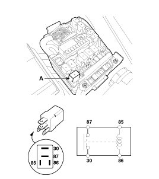
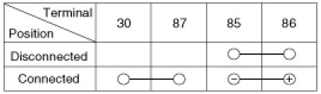
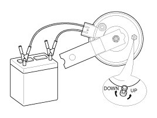

Repair Procedures
Inspection
Test the horn by connecting battery voltage to the 1 terminal and ground the 2 terminal.
The horn should make a sound. If the horn fails to make a sound, replace it.
Horn Relay Inspection
1. Remove the horn relay (A) from the engine room relay box.
2. There should be continuity between the No.30 and No.87 terminals when power and ground are connected to the No.85 and No.86 terminals.
3. There should be no continuity between the No.30 and No.87 terminals when power is disconnected.


Removal
1. Remove the front bumper.
2. Remove the mounting bolt and disconnect the horn connector (B), then remove the horn (A).

Installation
1. Connect the horn connector, then reassemble the horn.
2. Reassemble the front bumper.
Adjustment
Operate the horn, and adjust the tone to a suitable level by turning the adjusting screw.
NOTE:
After adjustment, apply a small amount of paint around the screw head to keep it from loosening.
